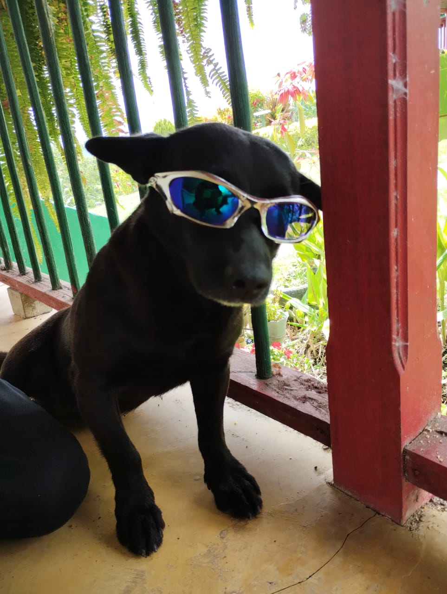

negro😎
y esta nuestra mascota que lo tenemos desde que llegamos al quindio, se puede decir que es parte
de la familia ya que es quien nos cuida en la noche (no es por que sea negro😎); le gustan las peleas, aunque ultimamnete
ha estado mas tranquilo tambien es el primero en saludar a cualquier miembro de la familia,
sin duda es un perrito que se gana el cariño de cualquiera